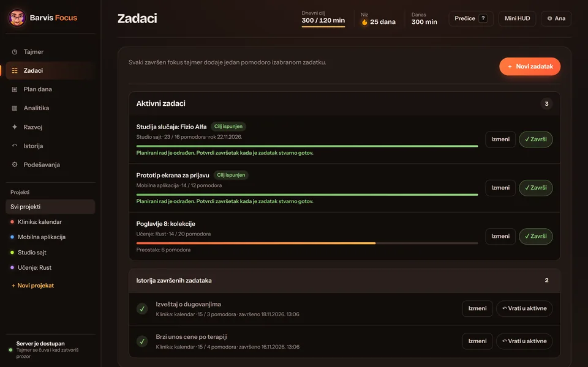

Fokus koji ostaje
povezan sa ciljem.
Aplikaciju sam napravio za sopstveni rad. Pokazuje kako pristupam zahtevnijim delovima posla: sinhronizaciji između uređaja, brzini i pristupačnosti.
- Problem
- Tajmer u jednoj aplikaciji, zadaci u drugoj, beleške u trećoj. Nije se videlo gde odlazi vreme.
- Rešenje
- Pomodoro tajmer vezan za projekat i zadatak, analitika po danu, nedelji i mesecu, i nivoi veština koji rastu sa uloženim vremenom.
- Tehnički deo
- Isti tajmer teče na računaru i telefonu. Početni ekran sveden sa 6 MB na 110 KB. Sve radi i samo tastaturom.
- Tehnologija
- Django, PostgreSQL, Docker; privatni server.


